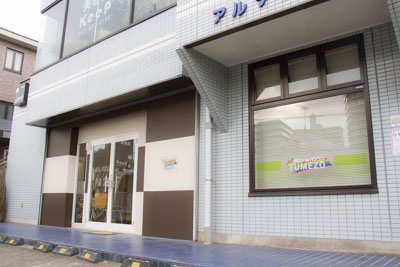
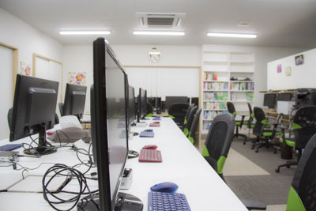

メニュー
ご紹介
こんなことをしています
利用者の方の背景や状況、能力や特性に合わせ、それぞれの目標に向かって、本人の気持ちに寄り添いながら支援を行います。パソコンには興味があるが、使ったことのない方、将来に向けパソコンを学習したい方、就労に向け資格を取りたい方、パソコンスキルを使った工賃作業をやりたい方など、それぞれの方の状況や希望に合わせた学習や作業を最新のパソコン環境を使って行う事が出来ます。
特徴・方針
夢像は、利用される方のニーズにより、色々な利用の仕方があります。
学習の場としての夢像
将来の就労に向けて、生活の充実のために、など、利用される方のニーズに合わせて、色々なパソコンの学習が自由に行えます。パソコン学習をサポートする専門のインストラクターも常時おり、テキスト類も充実しておりますので、自分のペースに合わせたパソコンの学習を行う事が可能です。インストラクターは、高度な知識を習得された利用者の方も担当されています。
学習例:
- Microsoft Office(Word、Excel、PowerPoint、Access、MOS各種)
- パソコン検定(P検各級、日商PC検定)
- 情報処理技術者試験(ITパスポート、基本情報技術者)
- イラスト関連(Adobe Illustrator、Photoshop、Inkscape、GIMPなど)
- Web構築・プログラミング関連(HTML、CSS、JavaScript、PHP、他多数言語)
- 動画編集(Adobe Premiere、After Effects)
居場所としての夢像
夢像に来られる方の中には、家にこもって、行くところや居場所のなかった方もあります。安心して通所出来る場所を求められています。夢像では、パソコンを利用する気持ちになれない時でも、ゆっくり休んだり、仲間と談笑したりできる場所としてご利用頂いてます。
作業をする場としての夢像
夢像では学習で得たパソコンスキルを発揮する場として工賃作業の提供を行っています。
工賃作業例:
- 名刺作成(word)、アンケート入力(Excel)、お弁当メニュー作成(Excel)、などの文書作成
- ラベル制作、POP制作
- Web構築管理(HTML/CSS、JavaScript)
- パソコン教室講師(唐木田コミュニティセンター委託事業)、教室インストラクター
相談の場としての夢像
専門の担当者が、個別支援計画の作成から日常で困っていることや福祉の手続き等について、常時相談を受けております。役所・病院・企業への同行なども必要に応じて行っています。
コミュニケーションの場としての夢像
利用者の方同士が交流できる場や機会を設けています。
例:
- 定例会(月1回、みんなで近況報告や、情報交換、グループ討議等を行います)
- 外出デー(月1回、利用者の希望を基に、色々な場所へ出かけます)
- 堀之内散歩隊(1時間弱近隣の公園などを散歩します)
- クラブ活動（寫眞倶楽部、デジタルゲーム倶楽部、ＷＥＢ班、園芸メダカ班など）
責任者メッセージ
パソコンサロン夢像は、最新のパソコンを自由に使って、利用される方のやりたいことが実現できるサロンです。たとえば、「就労を目指しているんだけれど、就労に役立つ資格を取りたい」とか、「イラストを描くのが趣味だが、CGにも挑戦したい」とか、「自分のHPを作ってみたい」とか、「パソコンを触った事がないけれど、使いこなしてみたい」とか、「音楽が好きなんだけど、パソコンで作曲してみたい」とか、「一人生活を始めたからパソコンで家計簿をつけたい」とか、様々なやりたいことをスタッフに相談しながら一緒に実現していきましょう。
夢像には、同じように障害を持たれた多くの仲間や困ったことを相談できるスタッフやパソコンに精通したインストラクターがおりますので、気軽に立ち寄って頂き、疲れを癒し、悩みと向き合い、仲間と交流しながら次のステップに向け力を蓄えて頂ければと考えています。
利用者の声
第三者評価利用者アンケートより。
- どの部屋もきれいに整理されて植物がおいてあり、気持ちよく過ごせる空間になっています。
- 優しい仲間に囲まれ、何かと相談できる夢像・・・いつも感謝しています。
- 夢像がきれいになってよかったです。利用しやすいしパソコンの勉強もできるので良いと思います。１～２時間程度ですが集中してできるのが良いと思います。
- 社会参加の場としてありがたく利用させていただいています。
- 普段利用している事業所を客観的に見ることができました。自分が感じたことを訓練に生かし、一般企業への再就職を目指して、通所を含めた一日のリズムを安定させ、病気と上手に付き合い社会復帰を果たそうと考えています。